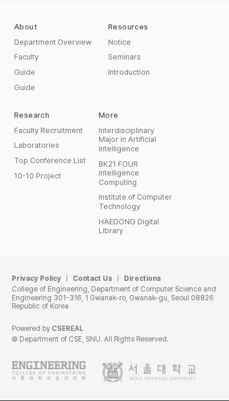

탐색을 접고, 들어가는 정보는 유지하기
중간 폭 A/B 비교 · 두 안 모두 앱 미적용먼저, 이번에 적용한 내용
DS-022 · 모바일 푸터 줄바꿈
긴 링크를 기존 열 안에서 단어 단위로 줄바꿈한다. 글자·색·그룹 폭·순서·간격과 데스크톱 한 줄 표시는 유지했다.
한·영 20개 상태의 배치, 대표 6장 이미지가 승인 견본과 일치했다. 실제 전후 보기.
적용한 영어 모바일 푸터 펼치기

중간 폭에서는 왜 다른 배치가 필요할까?
현재 640px부터 데스크톱 구성이 켜지지만, 페이지는 최소 1200px 폭을 요구한다. 768·1024px 창에서도 가로로 움직여야 오른쪽을 볼 수 있다.
최소 폭만 없애면 좌측 메뉴·본문 여백·오른쪽 보조 탐색이 그대로 남는다. 그래서 탐색을 접는 시점과 콘텐츠를 쌓는 시점을 나누는 B안을 추천한다.
A · 모바일 구성을 통째로 연장
1200px 미만은 기존 모바일 구성이다. 상단 메뉴를 쓰고 교과목은 목록형, 예약은 3일 보기, 소개 책자는 세로로 쌓는다.
단순하지만 1024px처럼 공간이 충분한 곳에서도 한 번에 보는 정보가 줄어든다.
B · 탐색과 콘텐츠 전환을 분리 · 추천
1200px 미만은 상단 메뉴를 쓰되, 1024px부터 교과목의 목록/카드 선택과 예약 7일 보기를 유지한다. 소개 책자는 들어가는 폭에서 기존 가로 나열을 유지한다.
가로 넘침을 줄이면서 기존 정보량과 선택을 더 많이 보존한다. 컴포넌트별 전환 조건을 맞추는 작업은 더 필요하다.
| B의 제안 범위 | 탐색 | 교과목·예약 |
|---|---|---|
| 640px 미만 | 기존 모바일 | 기존 목록형·3일 보기 |
| 640~1023px | 기존 상단 메뉴 구성 | 목록형·3일 보기 |
| 1024~1199px | 기존 상단 메뉴 구성 | 목록/카드 선택·7일 보기 유지 |
| 1200px 이상 | 기존 좌우 탐색 | 기존 데스크톱 |
1200px는 현재 데스크톱의 최소 폭을 출발점으로 삼았다. 1024px는 기존 달력·교과목 구성이 들어가는 폭에서 비교한 값이다. 모든 콘텐츠를 하나의 기준으로 바꾸거나 글자 크기를 일괄 조정하는 결정은 아니다.
같은 화면 폭에서 비교

1024px에서는 B가 기존 7일 달력을 유지한다. 날짜 이동도 표시와 같이 7일이다.
확인한 것과 실제 적용 때 남은 것
세 화면의 한·영 768·1024px 표본에서 A/B 모두 페이지 폭이 화면 폭에 맞았다. 예약은 3일/7일 표시와 다음 날짜 이동을 확인했다.
앱 적용은 아직이다. B는 메뉴의 스크롤 제한, 보기 전환, 전체 경계·다른 페이지를 더 확인해야 한다. 기존 이미지의 폭 조건도 연결해야 한다. 현재 공유된 조건을 역할별로 나눠 적용할 계획이다.
편집·관리 필드를 모바일 구성으로 일괄 바꾸는 범위는 포함하지 않는다. 세부 간격·최소 지원 폭은 여전히 별도 검토다. 조사 방식·한계·승인 후 적용 범위.
이번 판단 · L-Q2
B안으로 진행할까? 1200px 미만에서는 탐색을 접고, 1024px부터는 기존 예약 7일 보기·교과목 보기 선택처럼 들어가는 구성을 유지하는 방향이다.